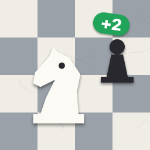

取り合いの損得が分かるチェス
その取り、得？ 損？
コンピュータ（やさしい・ふつう・つよい）か、1台をふたりで遊ぶチェスです。駒を選ぶと、動かせる先ごとに取り合いの損得を「+2」「−3」で出します。
- 取り合いの損得。取る手は、相手が取り返し、こちらがまた取り返し…と安い駒から順に続けたときの損得。取らない手は、行った先で取られて損をするときに「−」
- ただで取られる駒。相手が取ると得をしてしまう自分の駒に赤い丸
- 損をした手。指した手の一覧に損得を出し、終わったら2点以上損をした手の数を見せます
- キャスリング・アンパッサン・プロモーション・引き分けの決まりもあります。白でも黒でも。待ったもできます
- 登録・課金・オンラインの対戦はありません。記録はこの端末の中だけに保存します。画面のいちばん下に小さな広告が出ます